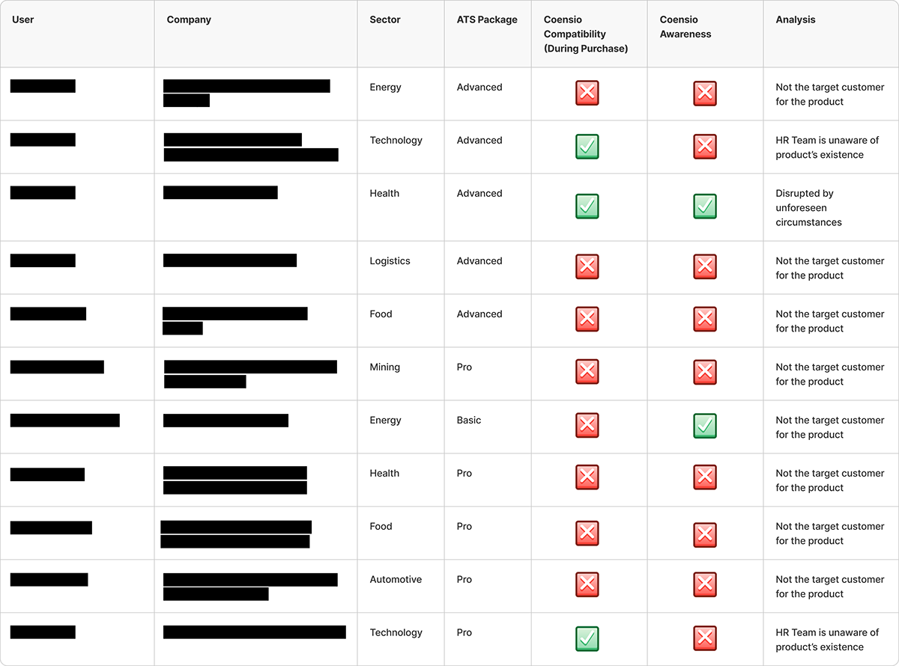

The problem
Coensio is a candidate assessment platform developed in partnership with Kariyer.net, bundled as an add-on to plans within the Kariyer.net ATS. The business noticed a troubling discrepancy: many clients who had purchased Coensio had never used it to send assessment tests.
A gap like that is an early churn signal. Clients who pay for something they don't use won't renew it, and they may distrust the next upsell, too.
Research question: Why isn't Coensio being used by the companies who purchased the service, and what needs to be done to increase usership?
Designing the study
I recruited from real purchase data using a two-question screener: did the client purchase Coensio, and did they ever send an assessment test? This let me focus precisely on the purchased-but-unused segment.
The interview guide probed the full chain between purchase and use, because a failure at any link would explain the silence:
- At the time of purchase, were you aware you were buying this service as an add-on?
- Are there open positions in your organization compatible with the assessment tests Coensio offers?
- Is your HR team aware this service is available to use during recruitment?
- Did your HR team receive a briefing on how to use it?
- Why has your HR team chosen not to use the service?
What the interviews revealed
I mapped every participant against two dimensions: whether Coensio was actually compatible with their hiring needs at purchase time, and whether the team was even aware the product existed on their account.

Two patterns dominated. Most non-using clients were not the target customer at all — the assessment tests didn't match the roles they hire for, which points upstream to how the add-on was being sold. The second group had compatible roles but their HR teams didn't know the product existed on their account. The purchase decision and the daily recruitment work were happening in different rooms.
From findings to action
The recommendations targeted each broken link in the chain:
- Sales targeting: ensure companies purchasing the service are within the target audience.
- Activation: arrange demos for the HR teams of companies that already purchased.
- Discoverability: surface the service more prominently inside the ATS.
- Transparency at sale: spell out plan contents during the sale, and convey the value proposition to upper management.
Concrete next steps handed to the team:
- Inform users about the Coensio test credits already available on their accounts.
- Ship a "Coensio Guide" detailing what the product is, how to use it, where the test credits live, what tests are included.
- Communicate KPIs that make the value visible: applications to Coensio-listed postings, position closure times, turnover rates.
Why this project matters to me
Nothing about this problem was visible in the interface. The product worked; people just never arrived at it. It's the clearest example in my work of research redirecting effort away from the product itself and toward the opportunities in sales, onboarding, and internal adoption.